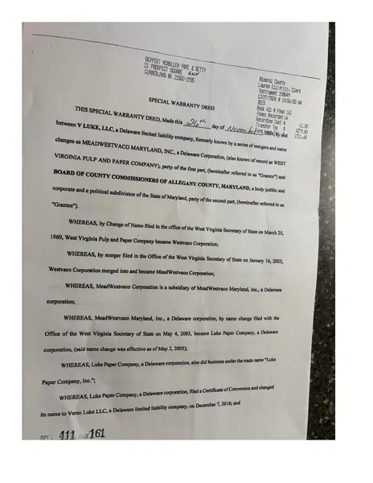

Public records • Local government • Allegany County, Maryland
The documents behind Allegany County government.
Allegany County Paper Trail collects and organizes public records, government documents and source material so residents can see the records, understand the process and reach their own conclusions.
Featured document collection
Luke Mill / Port River West

Port River West
Public records
Documents concerning the Luke Mill property
View agreements, meeting agendas, property records, deeds and other documents related to the former Luke Mill property and Port River West.
View the documents →From the archive
Latest documents
Additional document collections will appear here as they are added to the archive.
About this project
Why Paper Trail exists
Government decisions often involve years of meetings, contracts, correspondence, property records and other documents that can be difficult for the public to find or follow.
Allegany County Paper Trail brings those records together and provides context for why they matter. The goal is not simply to tell residents what happened, but to make the underlying information available so they can examine it themselves.
Transparency should mean more than announcing a decision after it has been made. Residents should be able to understand the process, the evidence and the questions that led to it.
Get in touch
Questions, records or tips?
Contact information for Allegany County Paper Trail will be available here.